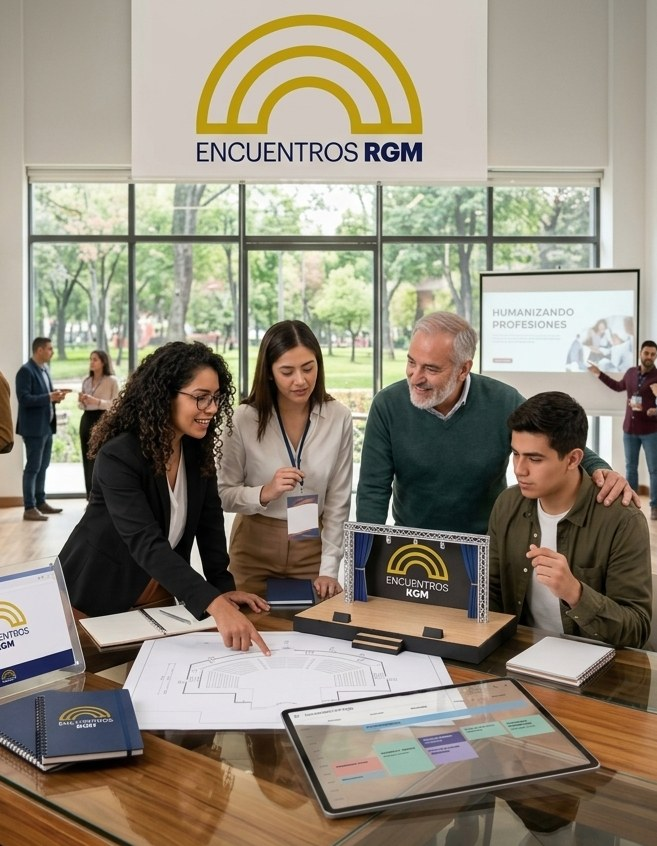
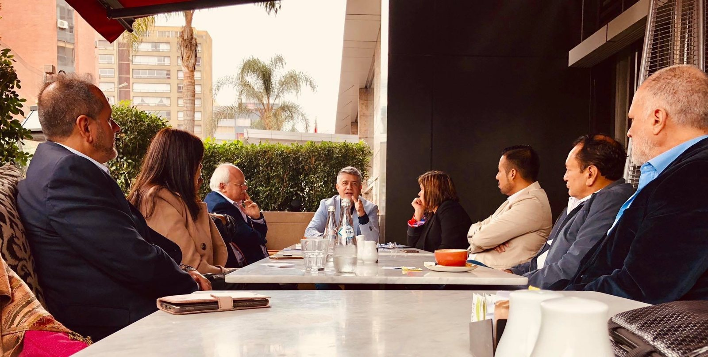
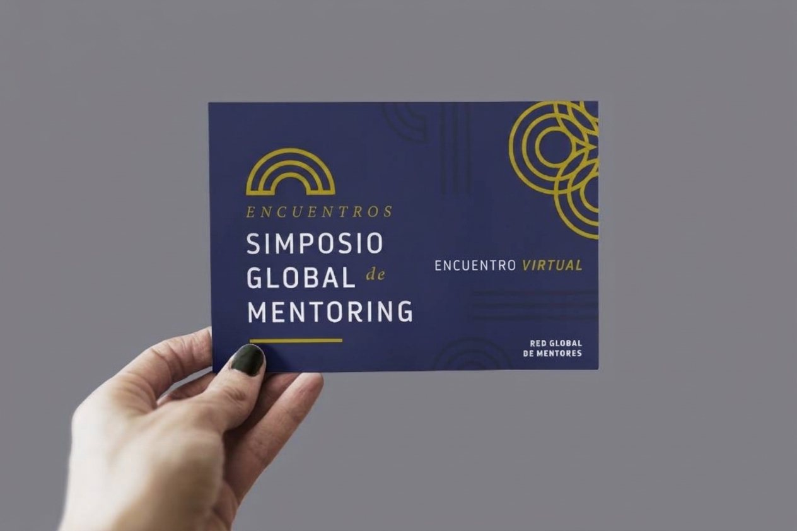
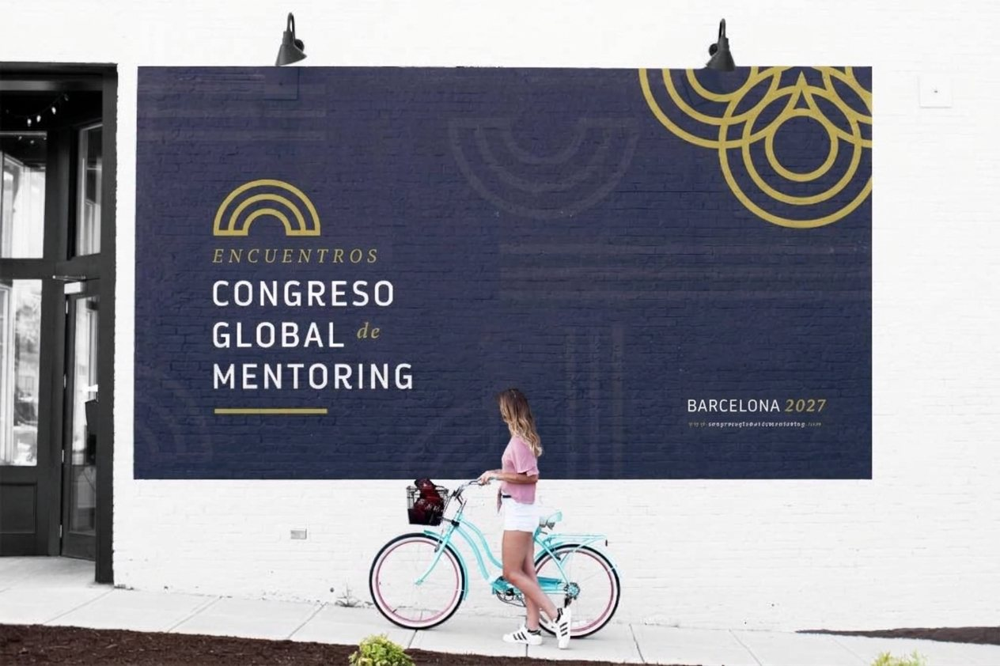

Encuentros RGM
El área del ecosistema que organiza los espacios donde la mentoría se encuentra: foros, encuentros, simposios y congresos para conversar, aprender y humanizar profesiones y oficios.
Las fechas, las inscripciones y los pagos se gestionan en Holding Mentors.

Una sola área, cuatro tipos de encuentro
Encuentros RGM es la unidad del ecosistema dedicada a organizar eventos de todo tipo. Coordina la agenda, cuida el mensaje y acompaña a quienes organizan, para que la mentoría llegue a más personas, en más ciudades y en más idiomas.
Foros Virtuales
Ciclos temáticos en línea, los lunes, jueves y sábados.
02Encuentros de Mentores
Desayunos, After Offices y visitas a universidades y empresas.
03Simposios Internacionales
Varias jornadas, en diferentes idiomas y con invitados especiales.
04Congreso Internacional
Cada año, en un país diferente.
Foros Virtuales
Ciclos temáticos que se realizan en línea tres días por semana. Cada ciclo toma un tema y lo conversa desde la mentoría, con distintas miradas y profesiones.

Encuentros de Mentores
Espacios cercanos para conocer la mentoría en persona, en la ciudad de cada Embajador.
- Desayunos de Mentores
- After Offices
- Visitas a universidades
- Visitas a empresas
Los organizan los Embajadores de la RGM en sus ciudades y países. Encuentros RGM los coordina y los acompaña con el Manual de Difusión de la Mentoría, para que todos transmitan el mismo mensaje y el mismo estándar.
Ver encuentros programados
Humanizando Profesiones y Oficios
RGMx es la marca bajo la cual los Embajadores difunden la mentoría en su ciudad o país, con un mismo mensaje y un mismo estándar. Entre los formatos que define el Manual, los encuentros de mentores se organizan así:
Cómo se organiza una actividad, en seis pasos:
- Definir
- Autorizar
- Preparar
- Ejecutar
- Acompañar
- Evaluar
Simposios Internacionales
Se desarrollan a lo largo de varias jornadas, en diferentes idiomas y con invitados especiales: líderes de otras comunidades que comparten su mirada.
Son muy útiles para la expansión de la mentoría, porque abren puentes entre comunidades y países. Cada simposio tiene su propia página de promoción.
Conocer el Simposio 2027
Congreso Internacional de la Mentoría
Se realiza todos los años en un país diferente y reúne a la comunidad de la mentoría de distintos lugares del mundo.
Cada edición tiene su propia página de promoción.
Conocer el Congreso 2027
Humanizando Profesiones y Oficios
La tecnología asume cada vez más tareas; la mentoría desarrolla el criterio, la ética y la responsabilidad de quienes ejercen cada profesión. Todo encuentro busca dos resultados, en este orden:
- Divulgar la mentoría: que los asistentes comprendan qué es, por qué importa y cómo puede transformar su profesión u oficio.
- Despertar el interés de formarse y certificarse como mentor: una ruta clara y siempre voluntaria para quien quiera dar el paso siguiente.
¿Por qué todo está en Holding Mentors?
Las fechas de todos los encuentros se publican en Próximos Encuentros, y allí mismo se realiza la inscripción y el pago, porque Holding Mentors cuenta con la galería de pagos del ecosistema.
Es la misma razón por la que los demás sitios de la RGM enlazan allí: Holding Mentors es el representante legal, administrativo, contable y financiero del ecosistema de mentoría que se está gestando.
Ir a Próximos EncuentrosEncuéntranos donde la mentoría sucede
Consulta la agenda completa, conoce el Simposio y el Congreso de 2027 e inscríbete en el encuentro que mejor se adapte a ti.